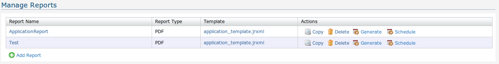
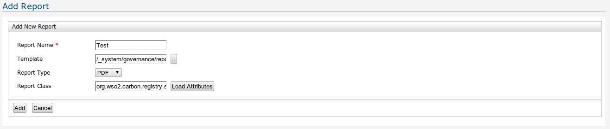
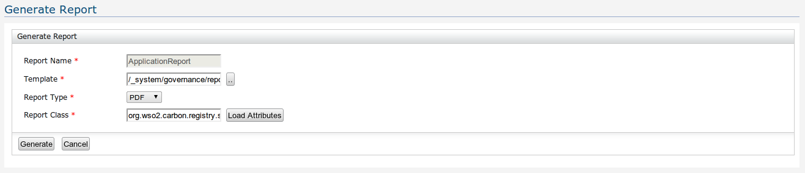
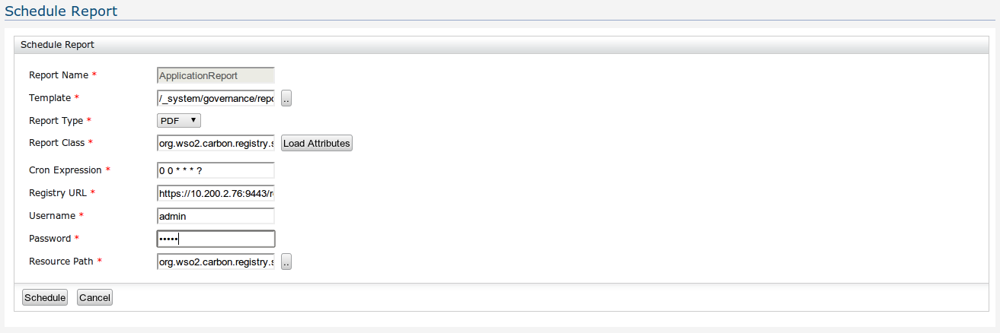

The purpose of having the Reports component is to properly document meta data about entities added to the registry as any type of artifact (Services etc.). The format and out look of the report is defined by a Jasper reporting template (.jrxml) and the content is populated by a corresponding Java class. The key components of reporting is as given below.
All the added reports will be displayed in a table. The table illustrates information such as report name, type, template and actions that can be performed on the report.The copy action would create a copy of an existing report under a different name.The delete action would delete the selected report.To generate the report in the defined document type the user can perform the Generate action.The schedule action would allow the user to schedule the report generation to be done in continuous intervals.When click on the report name the user will get redirected to the edit report page and when click on the template page the template resource will be shown.

Figure 1: List Reports
Below the report list table there is a link to add reports. The Add Report page allows users to enter information needed to generate a report.Report name will defined what the name of the report should be and the type would define what the document type should be.The two most important entries would be the Jasper reporting template and the reporting bean class. The template has to be uploaded to the registry as any other resource. The reporting bean class should be bundled as a jar and upload to the registry as well from Home > Extensions > Add.After loading the class do Load Attributes to load the defined attributes.

Figure 2: Add Report
The Generate report would redirect to a page similar to add report where it is possible to edit all the fields mentioned in the Add Report. The generate report would create the report and will get downloaded to the working setup.

Figure 3: Generate report
The user is able to schedule the report generation to be done in continuous intervals.A cron expression is used to define the event triggering time duration.The Registry URL is to give the registry where the report scheduling is being done, and it is possible to include a local or remote registry by the URL. The user permissions should also be provided by entering the username and password.

Figure 4: Schedule report